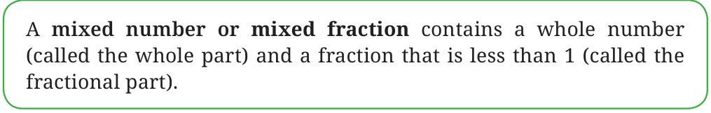

Figure it Out
- Figure out the number of whole units in each of the following fractions:
- \(\frac{8}{3}\)
- \(\frac{11}{5}\)
- \(\frac{9}{4}\)
We saw that
\(\underset{\text{Fraction}}{\frac{8}{3}} = \underset{\text{Mixed number}}{2 + \frac{2}{3}}\)
This number is thus also called ‘two and two thirds’. We also write it as \(2\frac{2}{3}\).
- Can all fractions greater than 1 be written as such mixed numbers?

- Write the following fractions as mixed fractions (e.g., \(\frac{9}{2} = 4\frac{1}{2}\)):
- \(\frac{9}{2}\)
- \(\frac{9}{5}\)
- \(\frac{21}{19}\)
- \(\frac{47}{9}\)
- \(\frac{12}{11}\)
- \(\frac{19}{6}\)

Jaya: When I have \(3 + \frac{3}{4}\), this means \(1 + 1 + 1 + \frac{3}{4}\). I know
\(1 = \frac{1}{4} + \frac{1}{4} + \frac{1}{4} + \frac{1}{4}\).
So I get
\(\left(\frac{1}{4} + \frac{1}{4} + \frac{1}{4} + \frac{1}{4}\right) + \left(\frac{1}{4} + \frac{1}{4} + \frac{1}{4} + \frac{1}{4}\right) + \left(\frac{1}{4} + \frac{1}{4} + \frac{1}{4} + \frac{1}{4}\right) + \left(\frac{1}{4} + \frac{1}{4} + \frac{1}{4}\right) = \frac{15}{4}\).
Therefore, \(\left(4 \times \frac{1}{4}\right) + \left(4 \times \frac{1}{4}\right) + \left(4 \times \frac{1}{4}\right) + \left(3 \times \frac{1}{4}\right) = \frac{15}{4}\).